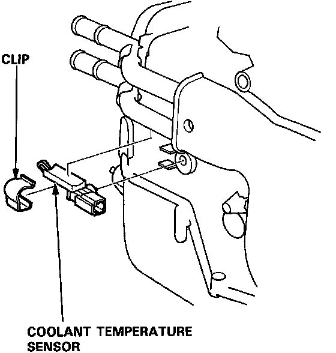

Operation CHARM
: Car repair manuals for everyone.
Home
>>
Acura
>>
1992
>>
NSX V6-3.0L DOHC
>>
Repair and Diagnosis
>>
Sensors and Switches
>>
Sensors and Switches - HVAC
>>
Coolant Temperature Sensor / Switch HVAC
>>
Service and Repair
Coolant Temperature Sensor / Switch HVAC: Service and Repair
Coolant Temperature Sensor Removal

Disconnect the connector, and remove the coolant temperature sensor clip and the sensor.